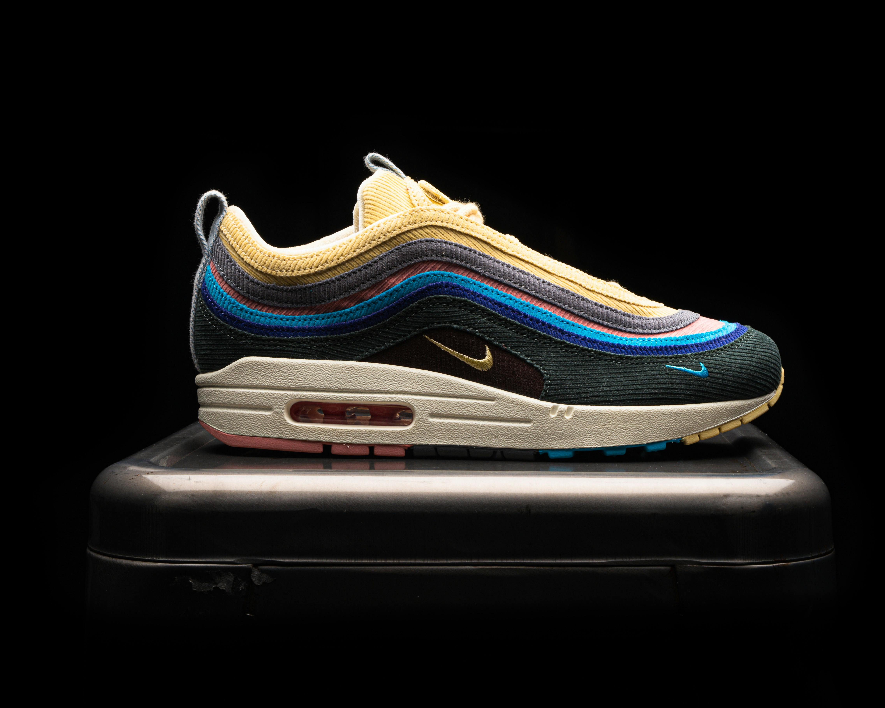
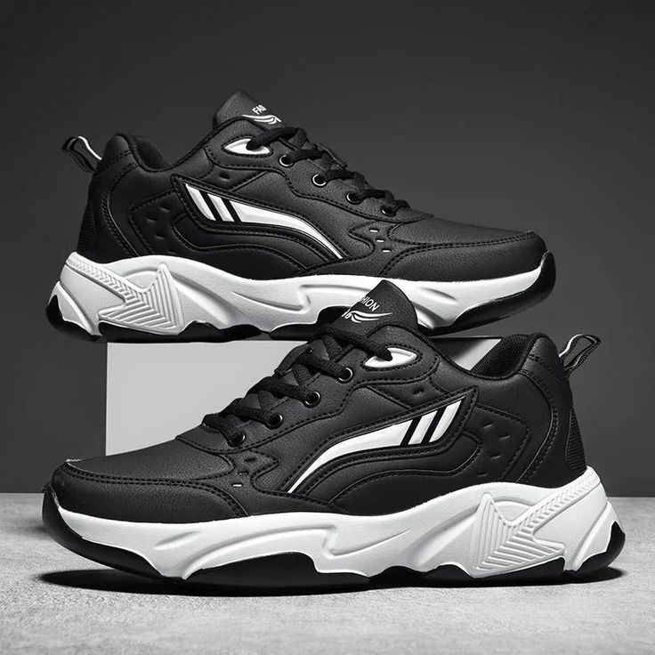

Running shoes have come a long way in 2024. With advancements in technology and design, runners have more options than ever to find the perfect shoe that meets their needs. In this article, we explore the top 5 running shoes of 2024 that stand out for their comfort, durability, and performance.
1. Shoe Model A
Shoe Model A has set the standard for lightweight comfort. Its breathable mesh upper and responsive cushioning make it a favorite among marathon runners.

2. Shoe Model B
For those who need extra support, Shoe Model B offers excellent stability without compromising on style. Its sleek design and cushioned sole are perfect for both road and trail running.
3. Shoe Model C
Shoe Model C is the go-to choice for runners looking for a balance of speed and comfort. The aerodynamic design reduces drag, while the soft midsole provides a smooth ride. Can be used for both fashion and excercise.
These are just a few of the standout running shoes for 2024. Whether you're training for a race or just getting started, the right shoe can make all the difference. Make sure to try on several models to find the best fit for your running style.
Comments